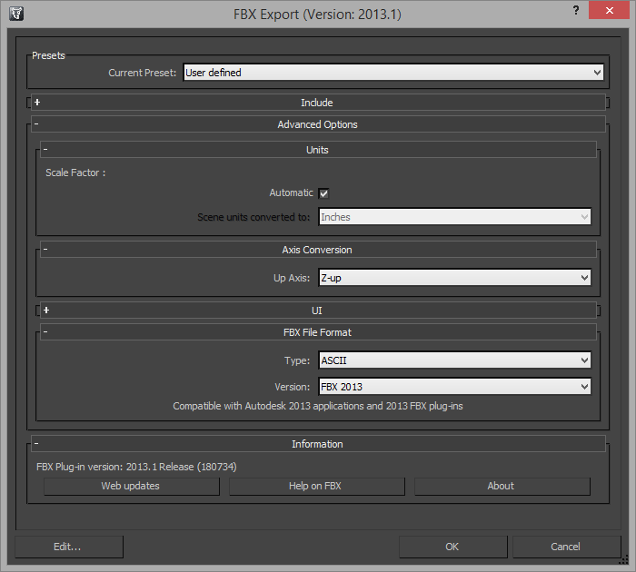

General Notes
- Your textures have to be in DXT1 compressed DDS format. The engine cannot load anything else than DDS and won't display anything else than DXT1 correctly. If you see only small stripes of your texture on your mesh, then you probably used DXT3 or DXT5, which won't work correctly.
- It is recommended to use 3ds Max but it might still be possible that something like Blender might work as well.
- We will be using the FBX format in this guide but it is also possible to use Collada or maybe even other formats. The ModelConverterD tool works best with the "FBX ASCII 2013" that 3ds Max produces, but does not work with the ASCII FBX format that Blender produces. You will probably need an ASCII version of your chosen format (be that FBX, DAE, etc...) because you have to adjust the paths to your textures since they have to be relative to the working directory of the engine.
- Throughout this guide, we will use a folder
exportthat lives on the same level as the Visual Studio solution file (.sln) and thedatafolder. - In 3ds Max, make sure that you use Generic Units in "Customize -> Units Setup...", otherwise you will get weird scales.
- Note: Do not use meters!
Requirements
- Autodesk 3ds Max
- We will be using the 64 bit version of 3ds Max 2013
- It should be available for you for free since Autodesk offers an educational license for free.
- A converter that is able to convert an image file to DDS (DXT1) format
- If you have DirectX installed, you can use the DirectX Texture Tool located at
"%DXSDK_DIR%/Utilities/bin/x64/DxTex.exe" - There is a Photoshop plugin by nVidia
- GIMP 2 also supports DDS out of the box
- There are multiple online conversion tools, just google it. ;)
- If you have DirectX installed, you can use the DirectX Texture Tool located at
- The ModelConverter from GEP/GPP Mirror
Creating and Exporting the Model
If you already have a model, skip this section, but make sure your model has UV mappings!
In this section, we are going to create a model that will represent our terrain. We will call the 3ds Max file terrain.max and save it in the export folder, where we also have the texture and model converter (check the corresponding sections below).
Start 3ds Max and you should have an empty scene. We will create the model in this scene. From the Create tab, make sure you are in the Geometry sub-tab and have the Standard Primitives selected in the drop-down menu. There, click on Plane.
Create a 20m x 20m plane in the origin (so the face of the plane faces upwards) and set the Length Segs and Width Segs to something like 8 or higher. You can set these parameters in the Modify tab, once you created the plane. You may also name your plane object there, which is always a good idea because "Terrain" says a lot more about the purpose of the model than "Plane001".
Having such a plain plane is kind of boring, so we distort it a bit using some modifiers. Apply the Bend modifier (from the drop-down menu Modifier List), set the Angle parameter to 45, the Direction parameter to 90, and choose the Y-Axis as the Bend Axis.
Now we unwrap the whole thing and generate some UV-coordinates. At this point, it would be a good idea to have a texture ready. Your texture should be in DDS DXT1 format already (3ds Max can handle it). Refer to the next section to find out how to convert your texture.
Apply the UVW Map modifier from the Modifier List drop-down and open the Material Editor using the M key on your keyboard. In this window, drag and drop the Standard Material from the left-hand side to the center area. Do this with the Bitmap as well. You are prompted to choose a bitmap. Locate your DDS file and select it, then hit "Open". Connect circle on the right of the Bitmap node with the circle next to the "Diffuse Color" of the Material node. By the way, as always, its always a good idea to name thing according to their purpose, so you should go ahead and name the material nodes.
To see the material on your object in the scene, make sure it is selected and then press the Assign Material to Selection button (or press A on the keyboard). The icon for this button has a small spherical object on it, as well as a green cube and an arrow pointing from the former to the latter. If this button is grayed out, you have to make sure the Show Shaded Material in Viewport button is pressed as well. It looks like a small chessboard with a lamp on it. You can find these button in the toolbar at the top )second row).
You can close the material editor because now we export the model. Make sure the model you want to export is selected, click on the 3ds Max button in the top left, click on the arrow next to "Export" and choose "Export Selected". Navigate to the export folder, enter terrain.fbx as the file name, and hit save.
In the export options window that just popped up, there are a couple of things that you have to make sure are set:
- Up Axis is set to Z-Axis
- "Units" is set to "Automatic"
- The FBX File Format is "ASCII" "FBX 2013" 
Note: You could also export as Collada (.DAE) but this is discouraged when using 3ds Max because the model converter likes FBX more. If you're using Blender, you have to use Collada, since the ModelConverter cannot handle the FBX ASCII format version that Blender produces.
And that is it! You should now head over to the section about model conversion.
Converting a texture to DDS and DXT1 compression
- Start the DirectX Texture Tool located at
"%DXSDK_DIR%/Utilities/bin/x64/DxTex.exe". - Click on "File" -> "Open" and locate your texture.
- Next, click on "Format" -> "Change Surface Format...", choose "Four CC 4-bit: DXT1" and hit OK.
- Now you can save the file as a .dds file
Converting the model to thModel
For this section, we are assuming that you exported a model terrain.fbx from 3ds Max, which has a valid UV mapping, a valid material and an assigned texture of some sort.
First of all, we have to make sure the texture paths in the FBX file are relative to the working directory of the engine, which is the same directory that the data and export folders live in. Open up the terrain.fbx file with your favorite text editor (Notepad++, vim, ...) and search for the string ".dds". This should give you all places where your texture is referenced. The FBX format saves both absolute and relative paths, but you will only have to edit the relative paths, i.e. the RelativeFilename key. If you followed the guide so far, it will look like this:
which we will change to
Time to actually convert the model. If you haven't already, get the ModelConverter.zip from GEP/GPP Mirror. Extract at least the files ModelConverterD.exe, assimp.dll, and readme.txt to the export folder (which we used throughout this guide). You can ignore the src folder as well as the readme.txt, but the latter one is recommended if you want to check some more options that the model converter offers.
Now that we've extracted the model converter, we will use it to export the FBX file to a thModel file, the format that the engine actually understands. In order to do this, open up a command prompt (e.g. use a Git Bash if you have Git installed or shift-right-click in the export folder -> "Open command window here") and enter the following command:
Note: If the conversion failed, make sure that your model has UV mappings and that you supplied the --includeMissingTextures option to the model converter.
If the conversion was successful, you will see a list of stats and the "Press any key to continue . . ." prompt that everyone should be familiar with. The converter places the output files in the same place the input files are located in, so in our case the export folder.
Copy the converted models along with their textures to their designated paths beneath the data/ folder, in our case terrain.thModel and grass.dds are copied to the directory data/models/.
Seeing the Terrain in-game
In this short section, we will create a small script that creates a game object with a render component. For more details about the render component, see Render Component .
Create an empty script data/scripts/terrain_test.lua and make it look like the following:
Don't forget to edit data/base/initialize.lua and include your new script there as the main script. When you start the game now, you should see your terrain in the origin of the scene!
If you are interested in generating collision geometry from this terrain, head over to Importing Collision Geometry. In any case, enjoy the following, which was included for the lulz: